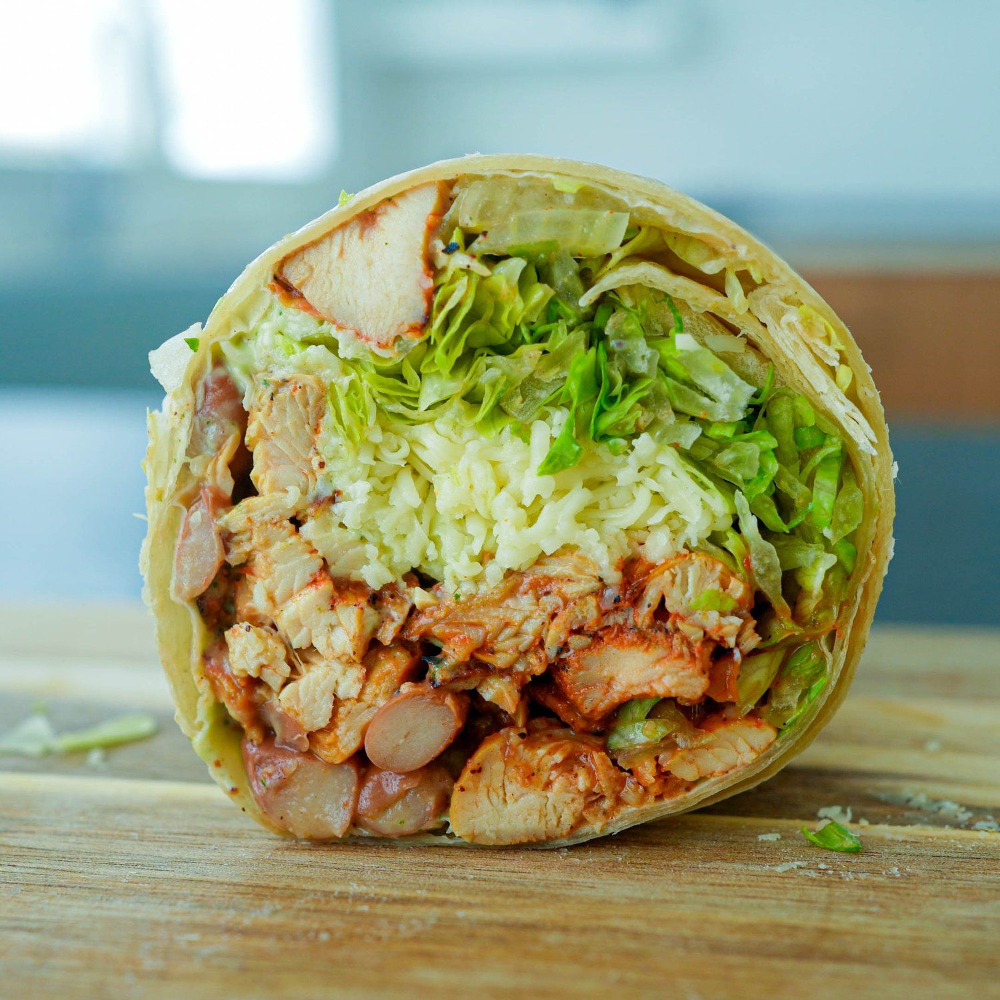
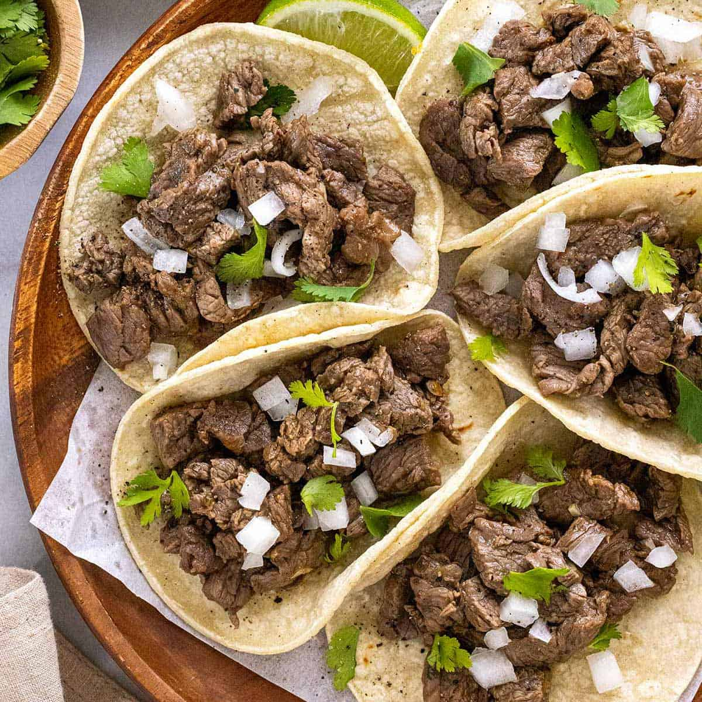

About Me
I was born in Tacoma, WA, and currently live in Port Orchard, WA, with my mom, dad, uncle, and grandma. We also own a 6-year-old Golden Retriever named Max (he also really loves to play!). I graduated from high school in 2023, and I have been attending Olympic College since the Fall of 2023.

My Education
- South Kitsap Highschool (2019-2023)
- Olympic College (2023-Present)
"Fun" Facts About Me
- I have made money from playing video games (albeit a small amount)
- I am an only child!
- I am half-Filipino (Mom's side)
- My favorite show/anime is One Piece
- I have watched over 100 different Anime (to some this may not be a lot, but to me it is)
My Favorite Food
- Burritos 
- Tacos 
- Lumpia
- Sushi
- Burgers


Some of My Goals in Life
One of my biggest goals in life is to live debt free (outside of a mortgage and car
payments).
I want to be able to make enough money to where my parents can retire comfortably and not have to
worry about paying anything off.
I also want to master the guitar and be able to write music, whether it's for myself, or an audience.
My last goal (for now) is to be able to inspire at least 1 person.